Start Here
So you're looking at the Python editor and wondering what to do. That's easy! Let's learn about the different parts of the editor. First of all, there are some buttons across the top:
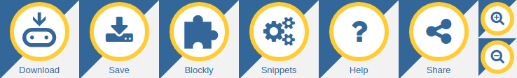
Pressing the TAB key will move the focus between the buttons. Pressing ENTER will activate the highlighted button. If you're in the text window (see below) you'll need to press the ESCAPE key to re-focus on the buttons. You can, of course, use your mouse.
What do they do?
| 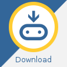 | Click on the "Download" button to save a special "hex" file on your computer. Plug in your BBC micro:bit (it'll show up as USB storage) and drag the newly saved file onto the device. Your code will run (or you'll see an error message scroll past on the device's display). See below for how to extract your code from a hex file back into the editor. |
| 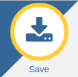 | Click on the "Save" button to save your code onto your computer. Because you're downloading Python code your computer might check you want to save the file. It's trying to protect you from downloading random software from the internet. But since this is your own code you're safe to proceed. See below for how to load code back into the editor. |
| 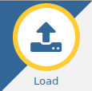 | It's very easy to load files from your computer into the editor: click the load button then drag the file from your computer onto the grey "drop" area. Alternatively, you could use the file picker (just click on the link at the bottom to toggle between the two options). The editor knows how to read Python files (whose name ends with ".py") and extract Python code from hex files (whose name ends with ".hex"). |
| 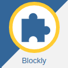 | This is an experimental feature. It may change in future and could contain bugs. Clicking the "Blockly" button displays a set of drag-and-drop blocks that can be used to quickly create Python code. Move the blocks, watch Python code appear and change. Moving such blocks will re-write your Python code and you may lose work. Furthermore, the arrangement of blocks is currently not saved, just the resulting Python code. |

|
Clicking on the "Snippets" button brings up a menu of Python short-cuts (snippets). Code snippets are short blocks of code to re-use in your own programs. There are snippets for most common things you'll want to do with Python. Select the one you want and fill in the gaps in the code editor to make it do what you want. Snippets are disabled when blockly is enabled. |
| Clicking on the "Help" button gets you here. But you knew that already, right..? :-) Notice that your editor is still available but in a separate tab in your browser. | |
| Clicking on the "Share" button creates a unique link that points to your script. Add this link to your bookmarks to retrieve your code. If you share this link others will be able to see your code. So your code remains private you must set a password and an optional password hint for it. This button is not available if you're running the editor from a local file system. | |
| Everyone likes to show off their awesome Python skills. These buttons are especially useful to zoom-in and zoom-out when you're trying to show your code to a large group of people via a projector. |
The name and description for your script is shown on the top right hand side. Click them to edit them.
The other part of the editor is the text window:
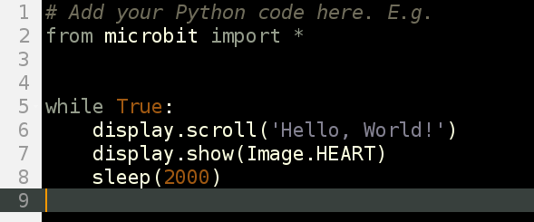
It's very simple to use. Just click and type.
The editor tries to help you out by colouring the text to show what all the different parts of your program are. For example, Python keywords (words built into the Python language) are grey. The brighter coloured words are bits of the program you have created. Brown words are constant values that never change and purple words represent strings of characters to display. All the lines are numbered with the current line highlighted.
Do you want to see how the editor actually works? It's easy, to view the "source code" press CTRL-U (or CMD-U on a Mac). There's a secret message for you in the code. Can you find it?
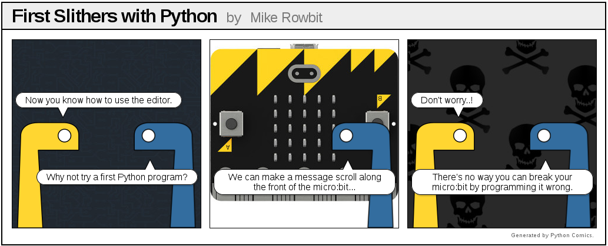Hello, World!
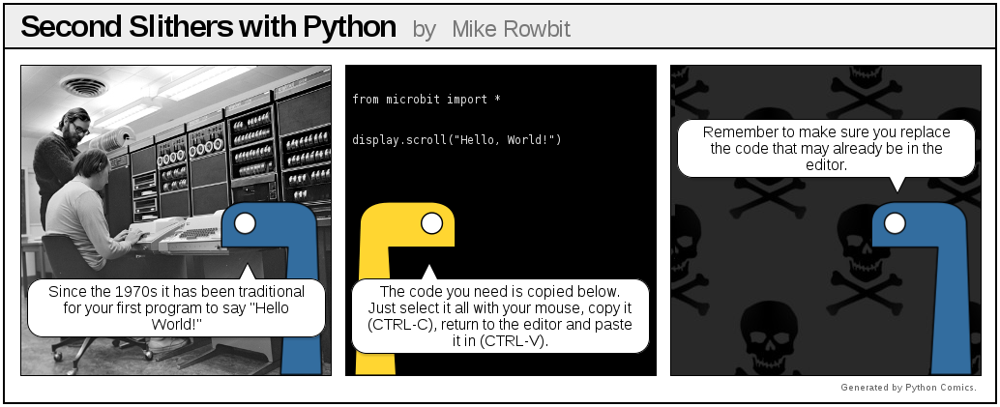
The version of Python that runs on the BBC micro:bit is called MicroPython. It's exactly like real Python except it's designed to run on small devices like the BBC micro:bit. Here's the MicroPython code you need to make your BBC micro:bit say "Hello, World!". Copy and paste it into the Python editor, download it and copy it onto your device (just like Yellow and Blue suggest):
from microbit import *
display.scroll("Hello, World!")The first line (from microbit import *) tells MicroPython
to get all the bits of Python needed to program the micro:bit.
The second line(display.scroll("Hello, World!")) tells
MicroPython to use one of those bits of Python (the display
module) to scroll the text, "Hello, World!" across the physical
display on the front of the device. It's all remarkably obvious. If you
followed Yellow and Blue's instructions you should see something like
this:

Can you make it scroll any other messages? Why not try making your
BBC micro:bit scroll your name? Remember, MicroPython will scroll
everything between the "quotation marks".
Blockly
Use blockly to make new Python code from easy to assemble blocks of code.
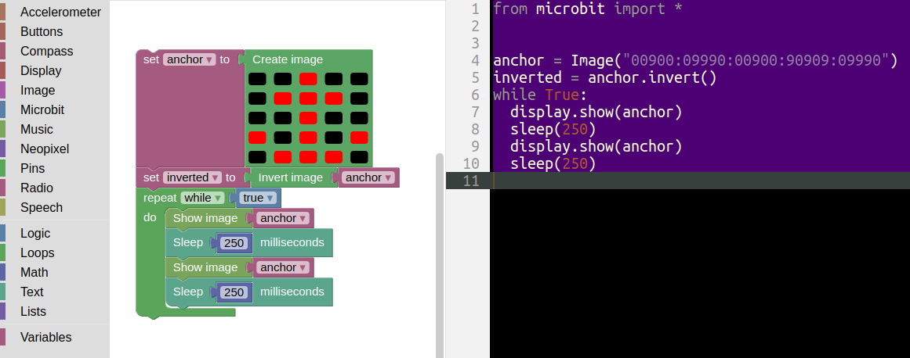
Blockly updates Python in the code editor as you move blocks around. There are lots of different blocks to cover all the features of the micro:bit. You can make more advanced code by combining blocks together (such as in the example above).
You should use Blockly to create new code since moving blocks around will overwrite any existing code you have in the editor (and you may lose work as a result). The arrangement of blocks isn't (currently) saved, so Blockly makes a great way to make simple Python code without lots of typing. In the end, you'll learn that simply typing Python is by far the quickest and easiest way to write code.
Not all the features of the micro:bit or MicroPython are available via Blockly. We've done this on purpose. Some of the more advanced and interesting stuff is only available in pure Python.
However, by using Blockly you'll very quickly get the hang of how Python code works and fits together.
Snippets
Snippets are a cool way to avoid typing. The animation below shows you how to use them:
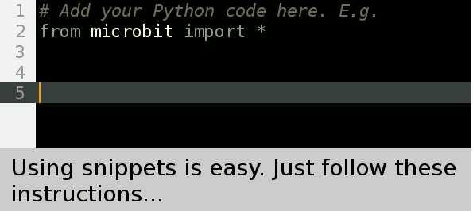
You can access snippets from the "Snippets" button (see above), but it's a lot quicker and easier to learn the triggers for the different fragments of code, hit the TAB key to expand the snippet and then fill in the remaining blocks of code so it does what you want.
When blockly is enabled the "Snippets" button is disabled. This avoids snippets from interfering with code that blockly may be generating.

Bug Fixes
Things will go wrong!
You have to imagine Python is the most strict English teacher in the universe... yes, even more strict than that really strict one you have at your school. Put simply, you have to type Python without any mistakes for it to work.
All programmers make mistakes and create bugs. It's a fact of life. When you have a bug MicroPython tries to help you out: it will scroll a message on its display. It may even include a line number. This message is like the first clue in a treasure hunt, you have to figure out the rest yourself.
Common bugs include Syntax Errors (which means you've typed it in wrong) and Name Errors (that mean you've typed in correct Python, but it can't work out what you're coding about).
If you're unsure what to do go read the MicroPython docs. Alternatively, just ask someone who knows what they're doing. If no such person is available you could just follow this handy flow chart:
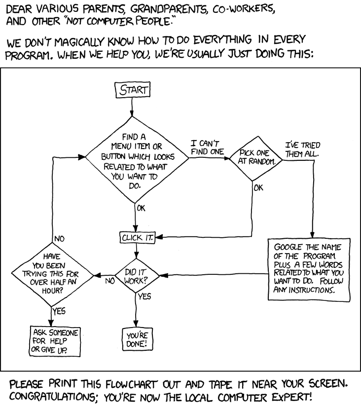
Fun Stuff
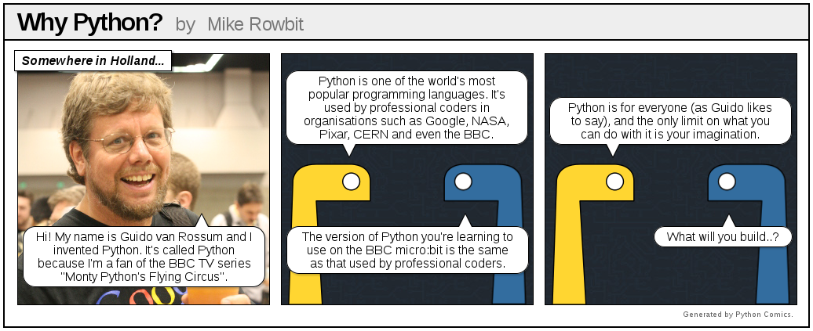
Python makes it simple to write powerful programs. Can you work out what this program does?
# Press button A for a fortune cookie.
from microbit import *
import random
fortunes = [
"Never step off a moving bus",
"This sentence is false",
"The meaning of life is overrated",
"Do not touch!",
"You will receive some advice",
"My hovercraft is full of eels",
]
while True:
if button_a.is_pressed():
cookie = random.choice(fortunes)
display.scroll(cookie)How could you improve it? What changes could you make?
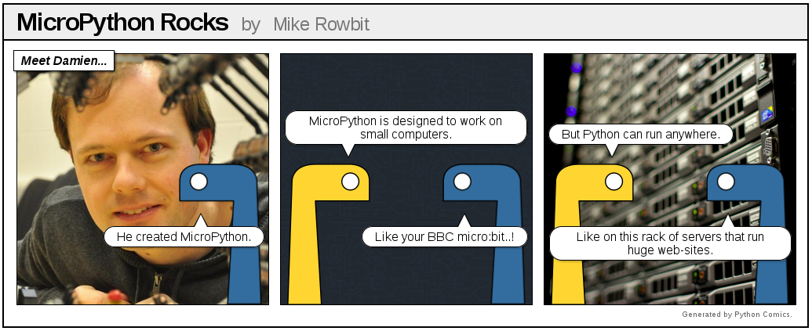
If you're looking for inspiration (robots, cool light displays and goofy games) you should check out the World Tour. These projects were created by volunteers from the global Python community (of which you're now a member!).